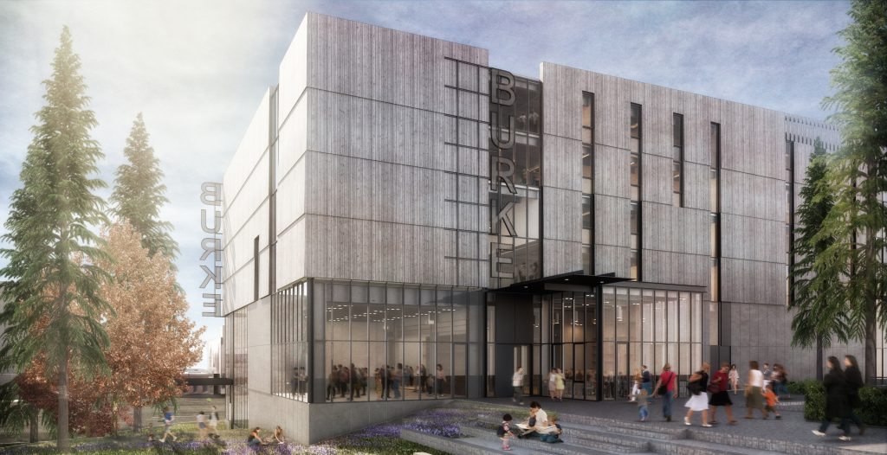
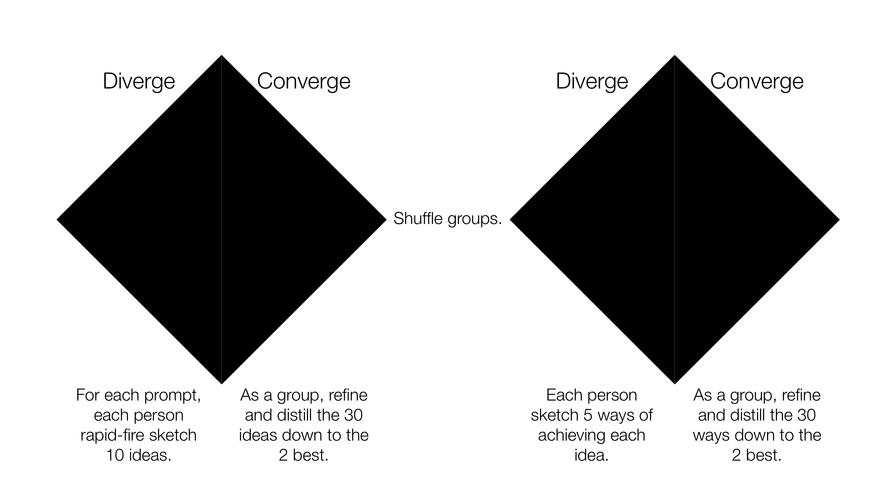

Sneak-A-Peek
Overview
Role
UX Designer
Vision Statement
Sneak-A-Peek lets museum visitors step inside the shoes of researchers by utilizing virutal reality (VR) to get a first person perspective. Its purpose is to engage and spark the interest of children, while also retaining the educational spirit of museums.
The Problem Space
The Burke Museum is experimenting with a new type of museum experience called "Inside-Out" rooms; these rooms will feature researchers that will be working inside. Museum visitors will be able to watch researchers at work and be able to interact with them at certain intervals of time, but there will be times when rooms are unoccupied or researchers want privacy.
Challenges
- Making sure that Sneak-A-Peek fosters human connection instead of replacing it
- Stakeholders have differing values – knowing which to prioritize became difficult
- Balancing the viability and desirability of Google Cardboard vs. Oculus Rift
Goals
Sneak-A-Peek has to be able to stand the test of time. A lot of technology used in museums get antiquated quite quickly and never get replaced, especially footage. Giving Burke Museum the option to use something cheap and replaceable, in addition to being easy to update was a top priority.
THE HANDOFF
Learning from the researchers
When we first started, we had to orient ourselves. By the time that we took over, a consulting team hired by Burke had already assessed and evaluated the concept of Inside-Out rooms as a whole.
What we learned:
- Primary users are families with kids and students
- There is a correlation between workroom popularity with researcher presence
- 89% of museums visitors would recommend the Inside-Out experience
- Observing progress was a key driver for repeat visits to the museum
- Museum visitors were concerned with researcher privacy
- Collections interpreters helped museum visitors understand what was happening in the Inside-Out rooms
- Families with children indicated that they desired more interactive components in addition to observing researchers
- Visitors indicated that signage was not visible

OBSERVATION
Seeing through the eyes of users
We came together to brainstorm some places that were similar to the Inside-Out rooms so that we can immerse ourselves in the experience. Since we did not have access to primary users, we wanted to at least get a glimpse of what it's like. I chose to observe people working at Din Tai Fung – a Taiwanese chain restaurant most famous for their dumplings. They showcase people hand-making their dumplings near the entrance.
Some things I observed:
- I felt concern for the workers' privacy; I didn't want to make them feel like zoo animals for the sake of my entertainment
- The relationship between the watcher and the watched suggests a very strange power dynamic – humanistic interaction is needed
INTERVIEWS & AFFINITY DIAGRAMMING
Getting to know the different stakeholders
I was assigned to interview Alethia Wittman, a collections interpreter. We met up and thought about what to ask her and then conducted the semi-structured interview. Using the notes that we took during the interview, we extrapolated the big ideas.
- People should feel a sense of community and belonging while visiting the Burke
- Human connection is key to inspiring the next generation of thinkers
- Museum visitors should have ownership of their own learning experience
- Everyone that visits the museum should be immersed in an engaging experience
- Less popular exhibits need design intervention the most
Afterwards, we met up with everyone to share our interview findings and made use of affinity diagramming to get a bigger picture of all the stakeholders we interviewed. We framed the four big design problems into "how might we" statements:
- How might we use technology to increase engagement?
- How might we fill space when workspaces are unoccupied or closed for privacy?
- How might we create stories and experiences that highlight multiple truths and interdisciplinary knowledge?
- How might we show the provenance (authenticity and metadata) of objects?
DESIGN CHARRETTE
The double diamond approach
We used the diverging-converging framework for the design charrette because the problem space was so broad when considering the diversity of the prompts. We split up into four groups to ideate, converge on a handful of ideas, then further flushed out those ideas. We repeated the process outlined by the figure above four times. What we were left with at the end of the session was a list of potential design solutions that resonated with the values of the interviewees.
They included:
- A large interactive screen that could zoom into various parts; centered on story-driven education
- An AI chatbot that would also narrate various videos.A QR code that would start a mission or scavenger hunt
- Substitute researchers and citizens scientists that would utilize the empty room as a multi-use space
- Interactive holograms that would be relevant to the work being done in that room
My team chose to focus on the issue of privacy and inoccupancy. We started with the idea of having an interactive glass screen connected to tablets that people can write or draw things, leave messages, etc. However, within that week and many sketches later that idea morphed into something completely different. VR – the cutting-edge of technology, could potentially be a cheaper solution using Google Cardboard and is inherently more immersive than a flat screen.
The pros of using Google Cardboard made it an attractive option. The museum would not have to worry about theft, eliminating the need for device tracking, a labor-intensive checkout process, or even a cable that would restrict movement. In addition, using Google Cardboard does not heavily impede on user experience – imagine museum visitors simply scanning a QR code to download an app then inserting their phone into the Google Cardboard.
The only notable con of Google Cardboard would be a lack of interaction, making it less immersive than a full-fledged VR headset like Oculus Rift. However, this means that the Burke has options and can make a decision based on their budget.
LOW-FIDELITY PROTOTYPING & TESTING
Refining VR for the museum context
We went ahead and created a low-fidelity prototype (in the form of a storyboard) of our idea Sneak-A-Peek and presented it briefly to Burke Museum staff a few weeks before the deadline for the final deliverable.
We received feedback and made changes to address three key problems:
- Lack of information about what museum visitors are seeing
- Long wait times, especially during weekends
- Researchers having difficulties updating the footage
VIDEO PROTOTYPE
The VR substitute teacher
SHOWCASE
A celebration
All the teams came together one last time to showcase our designs to stakeholders and we got featured on the HCDE website. It was a joy to see the people's reactions and I learned a lot from their feedback. I would say it was a bittersweet moment.
REFLECTION
So many things to do, so little time
Due to time constraints and not having access to our primary users, we were left to improve upon our prototype by solely relying on the critique of museum staff. As a UX designer, I believe that being able to interact and test with actual users is critical – making a Wizard of Oz prototype, or at the very least a low-fidelity paper prototype would be the next thing I would do.
One of the most glaring problems that someone pointed out during the showcasing event is the need for seating and adequate space. They pointed out that people are often dazed and confused when using VR – there should be safety measures in place so that users (especially young children) don't fall or bump into others.
In addition, our team didn't address the concern for long wait times on weekends because we felt that Burke Museum would logically accommodate for increased traffic during weekends by having more staff, lessening the need for Sneak-A-Peek. However, it would serve well to confirm what actually happens on weekends with a field study.
Working with Sneak-A-Peek has also inspired me to think beyond simply VR. Is there a way to make VR even more immersive with smell and touch? Integrating interactive real-life objects to VR could make the difference between a predictable VR experience and one that stands out.